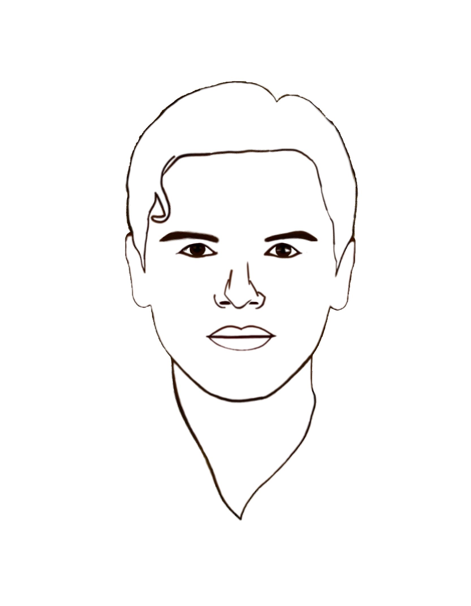

О нас
Вадьякко сегодня – независимый проект, нацеленный на популяризацию культуры Води среди интернет-сообщества.
Цель проекта – поднять интерес аудитории к истории и культуре водского народа.
Сайт поддерживается силами энтузиастов, и помощь со стороны пользователей крайней приветствуется.
Некоторые материалы, присутствующие на сайте, в том числе изображения, видео- или аудиоматериалы, могут быть защищены авторским правом. Подобные материалы представлены на сайте исключительно в познавательных целях, и права на них не оспариваются со стороны сайта и его персонала.
Рекомендуем к изучению
Главный водский сайт:
виртуальный водский музей и материалы по культуре води
Новый водский сайт:
статьи по истории и культуре води и многое другое
Общество Водской Культуры ВКонтакте:
полезные материалы и главные новости
Сайт коренных малочисленных народов Ленобласти
подробная статья о води, а также статья о водском костюме
Официальный портал культуры России
ознакомительная статья по водской культуре
Портал финно-угорского культурного центра РФ
различные статьи по водской культуре, самоучитель водского языка
Водский язык на YouTube
изучение языка и речь носителей
Традиционная кухня на YouTube
мастер-классы по водской кухне
Сайт по изучению водского языка
статья о языке, чтение на водском, ссылки на другие источники
Редакция сайта
Проект Вадьякко сегодня
- 